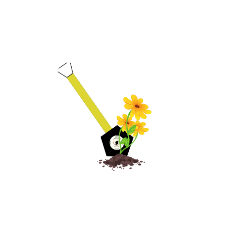
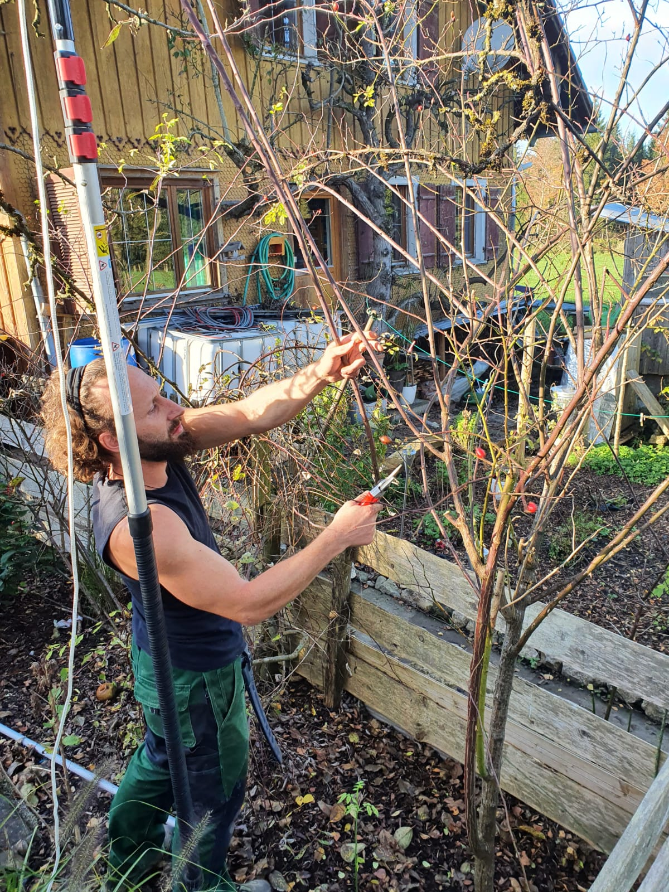
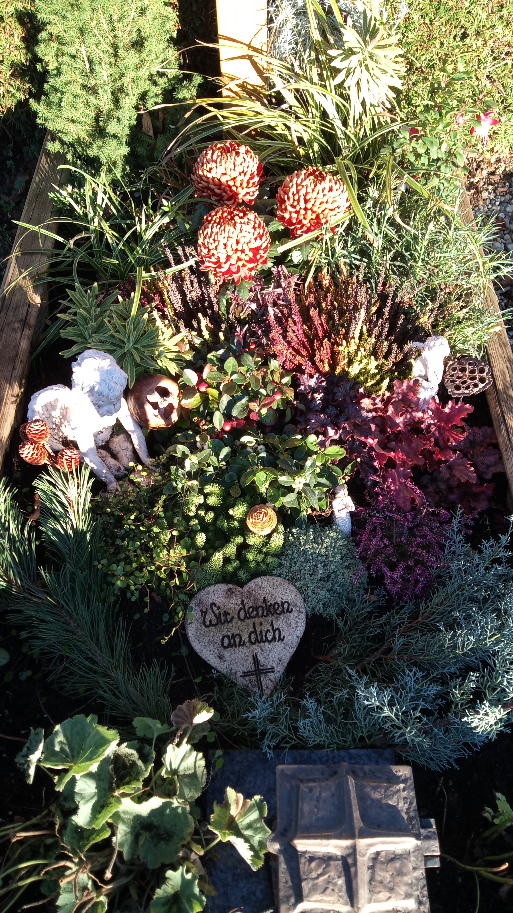
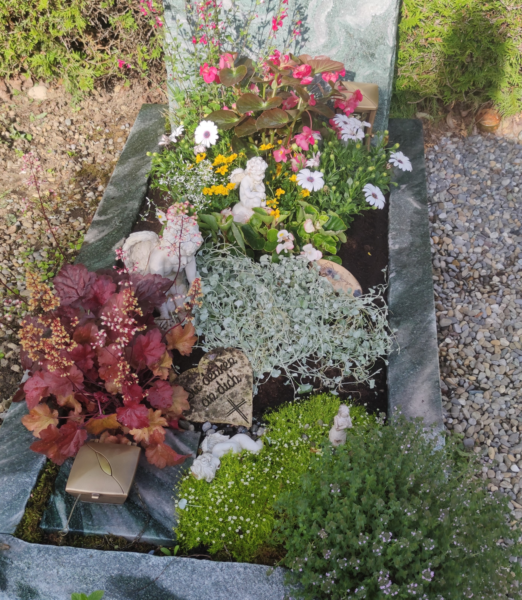
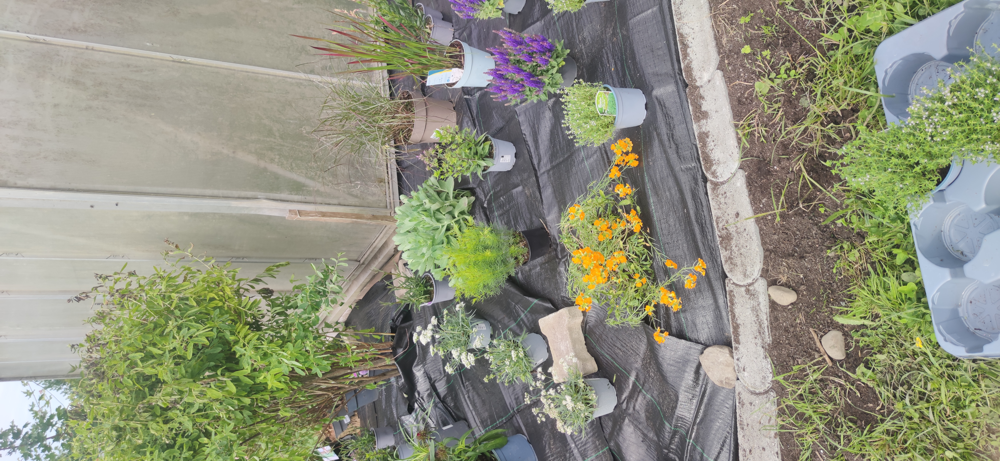

Neupflanzungen von Sträuchern, Bäumen und Stauden



Wir übernehmen fachgerechte Neupflanzungen von Sträuchern, Bäumen und Stauden, um Ihren Garten oder Außenbereich nachhaltig zu gestalten. Dazu gehören die Auswahl geeigneter Pflanzen, die sorgfältige Vorbereitung des Bodens sowie das korrekte Einsetzen der Pflanzen. Unser Ziel ist es, dass Ihre Neupflanzungen gesund anwachsen und langfristig gedeihen.


Uns liegt es am Herzen, Wissen über die Natur an junge Menschen weiterzugeben. In einer Welt, die immer digitaler wird, gerät die Bedeutung unserer natürlichen Umwelt oft in den Hintergrund – wir möchten dem bewusst etwas entgegensetzen.
Deshalb bieten wir Vorträge für Schulklassen an, in denen wir spannende Einblicke in verschiedene Naturthemen geben.
Dabei legen wir großen Wert darauf, die Inhalte altersgerecht und verständlich zu gestalten.
Jede Veranstaltung wird individuell vorbereitet, damit Kinder und Jugendliche Natur auf eine anschauliche und greifbare Weise erleben können.